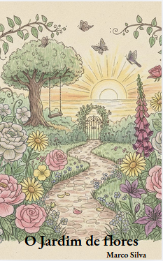

A escada para o impossível

Sonho vividos e intensificados a detalhes únicos e profundos.
Um jardim de poemas para florescer a alma
Este projeto nasceu do desejo de partilhar palavras que florescem em silêncio e tocam corações.
Aqui encontrarás vários projetos que correspondem a diferentes vivências e sentimentos das respetivas fases de vida.
Cada página é uma pétala aberta a uma alma que tenta encontrar a poesia.
Sonho vividos e intensificados a detalhes únicos e profundos.

Um jardim onde a vida floresce de várias histórias e formas

O calor na suas doces e mais variadas formas de viver.